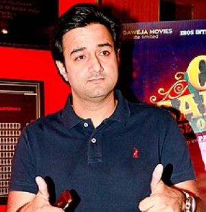
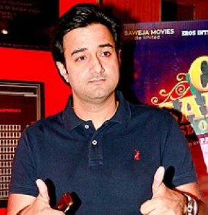

Pathaan
About
Pathaan is a 2023 Indian Hindi-language action thriller film directed by Siddharth Anand and written by Shridhar Raghavan and Abbas Tyrewala, from a story by Anand. The fourth installment in the YRF Spy Universe, it stars Shah Rukh Khan in the titular role with Deepika Padukone, John Abraham, Dimple Kapadia, and Ashutosh Rana. In the film, Pathaan, an exiled RAW agent, works with ISI agent Rubina Mohsin to take down Jim, a former RAW agent, who plans to attack India with a deadly virus.
Produced by Aditya Chopra of Yash Raj Films, the film began principal photography in November 2020 in Mumbai. The film was shot in various locations in India, Afghanistan, Spain, UAE, Turkey, Russia, Italy and France. Two songs were composed by the duo Vishal Shekhar, while Sanchit Balhara and Ankit Balhara provided the score.
Budget ₹225 crore
Box office ₹1050.30 crore
Cast
 
